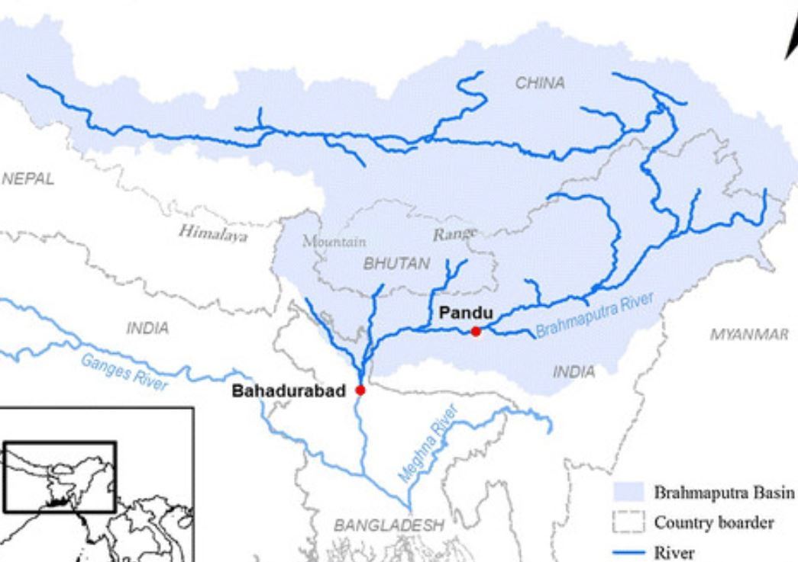

North Indian Rivers
Indus River System
Indus System Map

Rivers in Tabular format
| Name | Source | Falls Into | Length | Tributaries | Dams/Projects | Beneficiary States |
|---|---|---|---|---|---|---|
| Indus/Sindhu/Singi Khamban (Enters India near Ladakh) | Near Manas Sarovar Lake (Tibet/China) | Arabian Sea | 2880km (709km in India) | Right Bank tributaries are Shyok, Gilgit, Kabul, Gomal, Kurram. Whereas Left Bank has five major tributaries, namely, Chenab, Jhelum, Ravi, Beas and Sutlej | - | - |
| Satluj/Satadru (Enters India near Shipki-La) | Near Manas Sarovar Rakshash Lake (Tibet/China) | Indus | 1450km (1050km in India) | No Tributaries | Bhakra Nangal | Punjab, Himachal Pradesh, Haryana & Rajasthan |
| Beas/Bipasha | Near Rohtang Pass | Indus | 460km | No Tributaries | Pong Dam, Harike Barrage at confluence of Satluj and Beas, it channels water into the Indira Gandhi Canal, Mandi Project | Himachal Pradesh |
| Ravi/Iravati | Near Rohtang Pass | Indus | 725km | No Tributaries | Ranjit Sagar Dam or Thein Dam | Punjab |
| Chenub/Chandrabhaga | Near Bara Lacha Pass | Indus | 1180km | No Tributaries | Ratle, Dul Hasti | Jammu Kashmir |
| Jhelum/Vitasta | Verinag | Indus | 724km | No Tributaries | - | - |
Other Information
- As per Indus water treaty in 1960, between India and Pakistan, India can only utilize 20% of the total discharge of Indus, Jhelum and Chenub
- Jhelum has created international border between India and Pakistan
The Ganges River System
Ganges System Map

Rivers in Tabular Format
| Name | Source | Falls Into | Length | Tributaries | Dams/Projects | Beneficiary States |
|---|---|---|---|---|---|---|
| Ganges | Gangotri Glacier | Bay of Bengal | 2525km | Right Bank tributaries are Yamuna, Son. Whereas Left Bank tributary are Ghaghara, Gandak, Kosi, Gomti, Mahananda, Bagmati | Farakka Dam, Tehri Dam on Bhagirathi (Highest Dam in India) | West Bengal, Uttrakhand |
| Yamuna | Yamunotri Glacier | Ganges | 1376km (Longest Tributary of India) | Chambal, Betwa, Ken, Sindh | Assan Barrage on Yamuna (Dehra Dun), Chambal Project (on Chambal), Matatilla Project (on Betwa) | Himachal Pradesh, Uttarakhand, Madhya Pradesh, Uttarpredesh |
| Ghaghra | Gurla Mandota Peak near Manas Sarovar | Ganges | 1080km | Rabti, Sarada, Sarayu | Gharghara Dam | - |
| Gandhak | Nepal Tibet border | Ganges | 425km (in India) | Kaligandak, Mayangari, Bari-Trishuli | Gandak river Project | Bihar, Uttarpradesh, Nepal (Indo-Nepal venture) |
| Kosi | Nepal Tibet border | Ganges | 730km (In India) | Arun, Tumar | Kosi Project Near Hanumannagar in Nepal | Bihar, Nepal |
| Damodar | Khamarpot hills, Chotanagpur | Hugli | 541km | Barakar, Konar, Bokaro, Jamuria | Damodar Valley, Durgapur Barrage | West Bengal, Jharkhand, Karnataka |
Other Information
- Gangetic Dolphin is the national marine animal of India
- Water treaty of 1977 between India and Bangladesh
- Water treaty of 1996 between India and Bangladesh
The Brahmaputra River System
Brahmaputra System Map

Rivers in Tabular Format
| Name | Source | Falls Into | Length | Tributaries | Dams/Projects | Beneficiary States |
|---|---|---|---|---|---|---|
| Brahmaputra (Tsangpo in Tibet, Dihong in Arunachal Pradesh, Luit in Assam) | Near Manas Sarovar Chemayung-Dun Glacier | Bay of Bengal | 3848km | Left tributaries are Dibang River, Lohit River, Dhansiri River, Kolong River Right Tributaries are Kameng River, Manas River, Beki River, Raidak River, Jaldhaka River, Teesta River | Longest river bridge in India on Luit river (9.15km) | - |
Other Information
- Brahmaputra has the world's largest river gorge (496km long average depth 5000m)